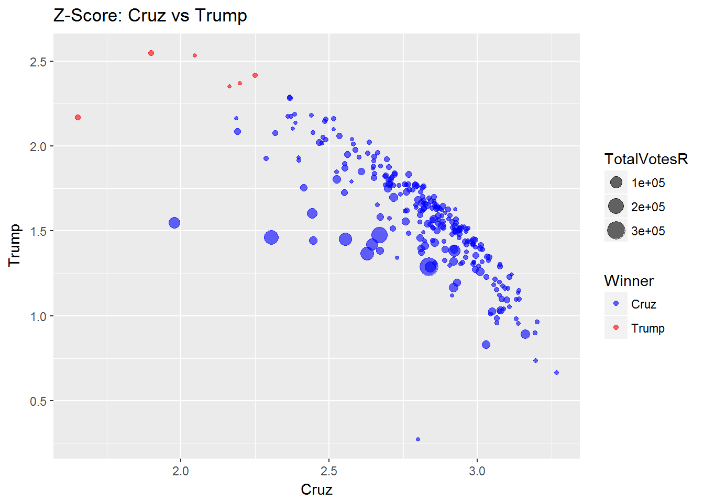
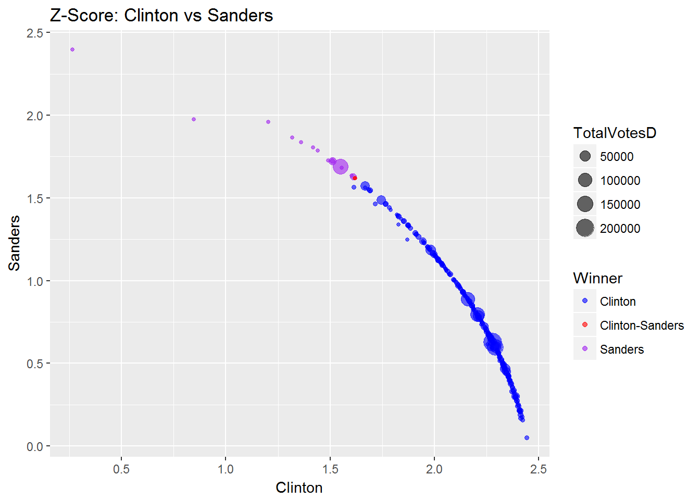

TexasPrimary2016: Z-Scores
Dec 12, 2016Z-Score
The z-score () is an interesting stat which tells not only whether a value is above or below the mean but also tells how many standard deviations that value is above or below the mean.
Calculating z-scores
Using the tex.results data frame (candidate and party vote totals) and the rankR and rankD data frames (candidate rankings by party), I built two data frames to hold the per county z-score for each candidate - one for Republicans and one for Democrats.
# Load dependencies
library(dplyr)
load("~/R/TexasPrimary2016/Data/Primary/tex.results.RData")
load("~/R/TexasPrimary2016/Data/Primary/rankR.RData")
load("~/R/TexasPrimary2016/Data/Primary/rankD.RData")
# Create lists to hold data frames
stats <- list()
stats$zscores <- list()
# Data frame - Republican per county z-scores -------------------------------
# Standard deviation
stats$zscores$R <- tex.results %>%
select(Bush:Uncommitted) %>%
apply(1, sd) %>%
data.frame(sd = .)
# Mean
stats$zscores$R$mean <- tex.results %>%
select(Bush:Uncommitted) %>%
apply(1, mean)
# Z-Score
stats$zscores$R <- tex.results %>%
select(Bush:Uncommitted) %>%
lapply(function(x) (x - stats$zscores$R$mean) / stats$zscores$R$sd) %>%
dplyr::bind_cols(stats$zscores$R,
data.frame(TotalVotesR = tex.results$TotalVotesR),
data.frame(Winner = rankR$Winner,
RunnerUp = rankR$RunnerUp))
# Data frame - Democrat per county z-scores ---------------------------------
# Standard deviation
stats$zscores$D <- tex.results %>%
select(Clinton:Wilson) %>%
apply(1, sd) %>%
data.frame(sd = .)
# Mean
stats$zscores$D$mean <- tex.results %>%
select(Clinton:Wilson) %>%
apply(1, mean)
# Z-Score
stats$zscores$D <- tex.results %>%
select(Clinton:Wilson) %>%
lapply(function(x) (x - stats$zscores$D$mean) / stats$zscores$D$sd) %>%
dplyr::bind_cols(stats$zscores$D,
data.frame(TotalVotesD = tex.results$TotalVotesD),
data.frame(Winner = rankD$Winner))Visualizing the new data
I built the data so that I could see the data, and I use ggplot2 for that.
# Load dependencies
library(ggplot2)
# Create lists to hold plots
plots <- list()
plots$zscore <- list()
# Plot
plots$zscore$R <- ggplot(stats$zscores$R,
aes(x = Cruz,
y = Trump,
size = TotalVotesR,
color = Winner)) +
geom_point(alpha = 3/5) +
scale_color_manual(values = c("blue", "red"))
plots$zscore$D <- ggplot(stats$zscores$D,
aes(x = Clinton,
y = Sanders,
size = TotalVotesD,
color = Winner)) +
geom_point(alpha = 3/5) +
scale_color_manual(values = c("blue", "red", "purple"))
# View the plots
plots$zscore$R + labs(title = "Z-Score: Cruz vs Trump")
plots$zscore$D + labs(title = "Z-Score: Clinton vs Sanders")
Comparison
Looking at the two graphs, what stands out the most to me is the tightness in the Clinton vs Sanders line compared to the Cruz vs Trump line. It could be due to distortion in the x/y scales, but I figure that it is more likely due to Clinton and Sanders accounting for a higher percent of total votes within their party than Cruz or Trump accounted for within their party.
# Clinton and Sanders as percent of total
D <- tex.results %>%
select(Clinton, Sanders, TotalVotesD) %>%
colSums()
D <- (D["Clinton"] + D["Sanders"]) / D["TotalVotesD"]
# Cruz and Trump as percent of total
R <- tex.results %>%
select(Cruz, Trump, TotalVotesR) %>%
colSums()
R <- (R["Cruz"] + R["Trump"]) / R["TotalVotesR"]As it turned out, Clinton and Sanders accounted for 98.4% of the vote within the Democratic primary, while Cruz and Trump accounted for 70.5% of the vote within the Republican primary.
Runner Ups
Sanders and Clinton were the only runner-up candidates in the Democratic primary. In the Republican primary, however, Marco Rubio did manage to place second on 6 occasion, which happened in Brazos, Dallas, El Paso, Kenedy, Travis, and Webb counties.
plots$zscore$R +
facet_grid(~RunnerUp) +
labs(title = "Z-Score: Cruz vs Trump",
subtitle = "Faceted by Runner Up Candidate")
Rubio managed to place second place to Cruz on 5 occasions and placed second to Trump on 1 occasions. This offers one reason why data points in the Cruz vs Trump graph stray so further from one another than they do in the Clinton vs Sanders graph.